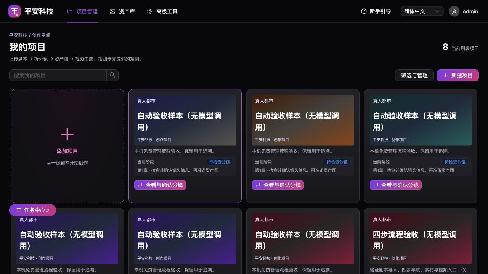

01 / STORY TO SHOT
从故事到镜头
上传剧本，拆解场景与镜头。检查和确认分镜，
让叙事节奏在生成之前就清晰可见。
故事工作区流程示意
SCENE 01 傍晚 · 城市天台
天色渐暗。她推开天台的门，
在城市的风里，听见熟悉的旋律。
从文字出发，构建镜头
01
天台远景环境建立 · 全景
检查分镜02
推开天台的门动作衔接 · 中景
检查分镜AI 短剧创作工作台
从剧本到分镜，从角色资产到视频生成。
把创作串成一条流，让每一个灵感，都有清晰的下一步。
剧本拆解 · 资产复用 · 分镜生成

你的灵感，有了自己的工作空间。
让每个创作环节，自然衔接。
MADE FOR YOUR NEXT STORY
把复杂的创作过程，拆成可以推进的每一步。
从第一行剧本，到每一个镜头，都在同一个工作空间。
上传剧本，拆解场景与镜头。检查和确认分镜，
让叙事节奏在生成之前就清晰可见。
天色渐暗。她推开天台的门，
在城市的风里，听见熟悉的旋律。
天台远景环境建立 · 全景
检查分镜推开天台的门动作衔接 · 中景
检查分镜集中管理角色、场景和道具。复用已确认的资产，
让每次创作都从同一份视觉参考出发。
人物设定 · 视觉参考 · 资产版本
同一资产，连接不同镜头
逐镜头检查描述与参考资产，
准备、确认，再推进视频生成。
根据已配置的模型供应商，
选择适合当前任务的生成能力。
A CLEAR PATH FROM IDEA TO FRAME
创作有自己的节奏。每一步都能检查，每一步都由你决定。
创建项目，导入你的故事。
从完整剧本开始组织创作。
检查拆解出的场景与镜头，
确认内容后继续下一步。
准备角色、场景与道具参考，
生成并确认可复用的视觉资产。
先检查镜头与生成配置，
确认准备结果后，发起视频生成。
准备是整理和检查生成条件；生成是确认之后执行模型任务。
ROOM FOR EVERY CREATOR
一个人的灵感，或一群人的创作。
把故事、素材与镜头放在一起，
专注让作品走向下一步。
用一个工作空间组织剧本、分镜和资产，
让个人创作更有条理。
集中梳理项目与视觉参考，
让分镜与资产之间的关系清楚可见。
从品牌故事走向镜头表达，
在生成之前，确认内容与视觉方向。
A FEW THINGS TO KNOW
开始创作之前，
先把这些问题说清楚。
这是平安科技的 AI 短剧创作工作台，用于组织剧本、分镜、角色与场景资产，以及后续的视频生成任务。它把多个创作环节串成一条可检查、可推进的流程。
进入工作台后创建项目并上传剧本，依次完成拆分与确认分镜、生成资产图、准备并生成视频。每个阶段先检查内容，再继续下一步。
可使用的图像与视频模型取决于工作台中已配置的模型供应商、密钥及对应权限。请以工作台实际提供的选项为准。
角色、场景和道具可以作为项目资产保存，并在不同镜头中复用已确认的视觉参考。参考资产有助于统一方向，具体生成效果仍需要逐镜头检查与调整。
生成任务需要配置模型，并在检查分镜、资产及准备结果后确认执行。工作台支持分阶段推进创作，并不保证上传剧本后即可自动完成一部短剧。
你可以在手机浏览器中访问这个落地页原型。涉及复杂分镜编辑、资产检查与生成配置时，建议使用桌面浏览器，以获得更完整的操作空间。